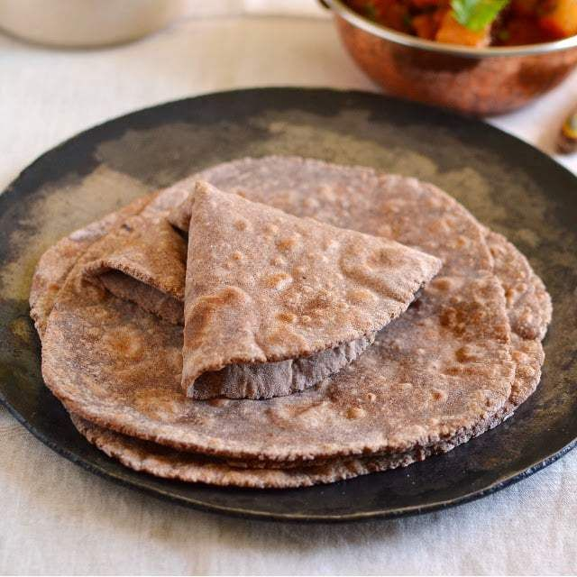

Home
Mandua ki roti

Description
This roti is nutritious, rich in calcium and fiber, and traditionally eaten in Uttarakhand, especially in winter for its warming effect. It is a staple in Kumaoni cuisine and pairs well with simple local accompaniments.
Ingredients
- 2 cups Mandua flour (finger millet flour)
- About 3 cups wheat flour (can vary; some recipes use less wheat flour or only mandua flour)
- Water as required (lukewarm)
- Salt to taste
- Ghee for serving (optional)
- Jaggery or garlic salt as accompaniments (optional)
Steps
- Mix the mandua flour and wheat flour well with salt.
- Gradually add lukewarm water to form a stiff dough. Do not add too much water as mandua flour is gluten-free and can become sticky.
- Knead the dough well and divide it into small balls.
- Flatten each ball with your palms or roll gently to form rotis. If the roti cracks, you can apply a little water to the edges.
- Heat a tawa (griddle) on medium flame. Cook each roti on the tawa, flipping to cook both sides until golden brown spots appear.
- Optionally, cook the roti on direct flame for 1-2 minutes to puff it up.
- Brush the hot roti with ghee for extra flavor.
- Serve hot with green salt (hara namak), chutney, jaggery, or a vegetable curry.